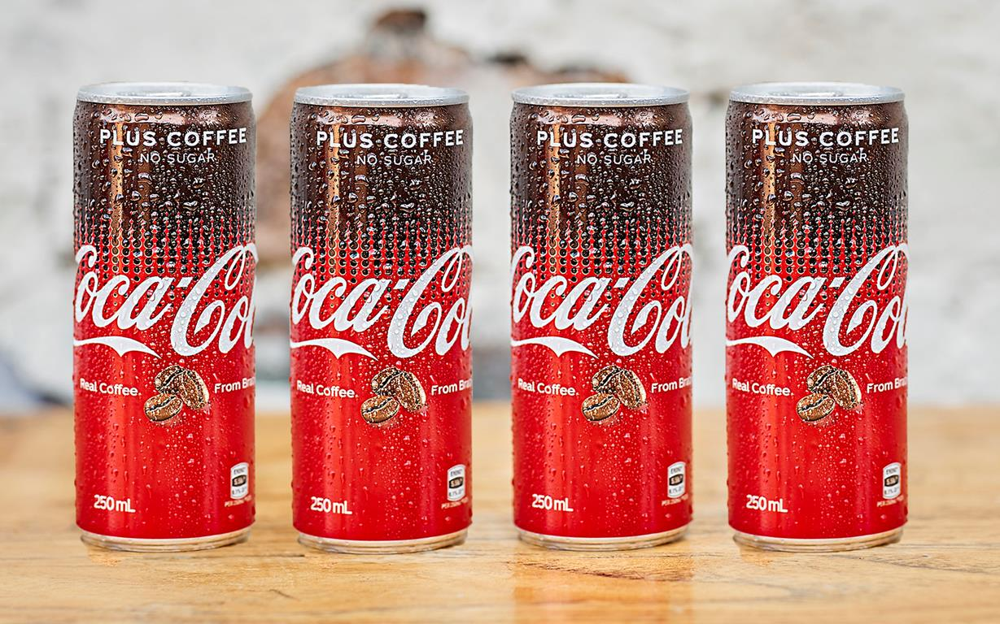

Однако всемирную известность ему принесли иллюстрации к «детской книге для взрослых» «Засыпай уже, черт подери» и ее детской версии «Серьезно, давай засыпай».В этой книге Кортес рассказывает историю двух самых популярных напитков на планете – кофе и кока-колы. Оказывается, в течение года в мире производится семь миллионов тонн кофейных зерен и примерно одна тысяча тонн кокаина. За тот же период компания Coca-Cola продала почти 135 миллионов тонн своего напитка, а главный ее поставщик импортировал 45 тонн коки. И все это происходило в США, где по «наркотической» статье произведено больше арестов, чем в любой другой… Все иллюстрации к своей книги Кортес делал сам – ручкой и цветными карандашами.